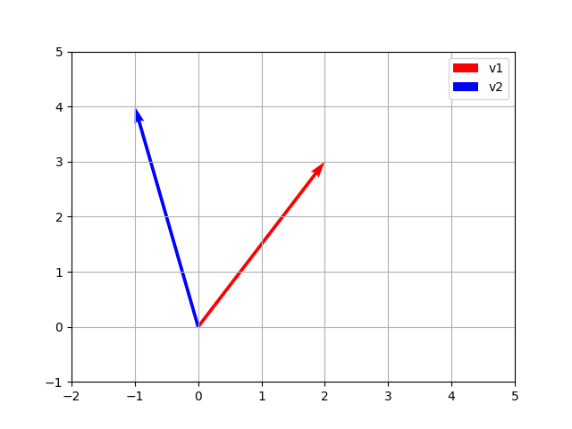
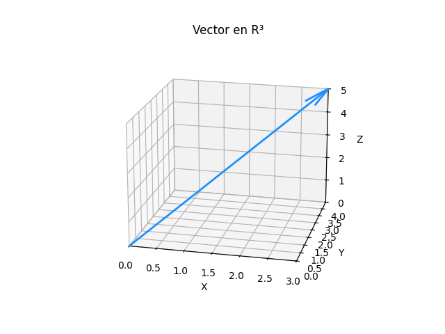

Un vector es una lista ordenada de números que se utiliza para representar magnitudes y direcciones en el espacio. Matemáticamente, un vector puede expresarse como:
Un vector en \(\mathbb{R}^2\) tiene dos componentes, y en \(\mathbb{R}^3\) tiene tres:
En Python, los vectores se pueden representar usando listas, arrays de NumPy o estructuras similares. Veamos un ejemplo con NumPy:
import numpy as np
# Crear un vector
v = np.array([1, 2, 3])
print(v)
Salida en consola:
[1 2 3]La suma de dos vectores se realiza sumando sus componentes correspondientes:
u = np.array([1, 2])
v = np.array([3, 4])
suma = u + v
print(suma)
Salida en consola:
[4 6]Multiplicar un vector por un escalar amplía o reduce su magnitud:
El producto punto entre dos vectores se define como la suma de los productos de sus elementos correspondientes:
producto_punto = np.dot(u, v)
print(producto_punto)
Salida en consola:
11El módulo o magnitud de un vector en \(\mathbb{R}^n\) se calcula con la fórmula:
La distancia entre dos puntos \(A(x_1, y_1)\) y \(B(x_2, y_2)\) se calcula como:
A continuación se muestra un gráfico de vectores en \(\mathbb{R}^2\) y \(\mathbb{R}^3\):
 
# Importamos las bibliotecas necesarias
import numpy as np
import matplotlib.pyplot as plt
from mpl_toolkits.mplot3d import Axes3D
# Vectores en R2
v1 = np.array([2, 3])
v2 = np.array([-1, 4])
# Graficar vectores
plt.quiver(0, 0, v1[0], v1[1], angles='xy', scale_units='xy', scale=1, color='r', label='v1')
plt.quiver(0, 0, v2[0], v2[1], angles='xy', scale_units='xy', scale=1, color='b', label='v2')
plt.xlim(-2, 5)
plt.ylim(-1, 5)
plt.grid()
plt.legend()
plt.show()
# Definimos el vector en R3
vector = np.array([3, 4, 5]) # Cambia estos valores para otros vectores
# Crear la figura y el eje 3D
fig = plt.figure()
ax = fig.add_subplot(111, projection='3d')
# Origen del vector
origin = np.array([0, 0, 0])
# Graficar el vector
ax.quiver(origin[0], origin[1], origin[2],
vector[0], vector[1], vector[2],
color='dodgerblue', arrow_length_ratio=0.1, linewidth=2)
# Etiquetas de los ejes
ax.set_xlabel('X')
ax.set_ylabel('Y')
ax.set_zlabel('Z')
# Configuración de límites
ax.set_xlim([0, max(vector[0], 1)])
ax.set_ylim([0, max(vector[1], 1)])
ax.set_zlim([0, max(vector[2], 1)])
# Título
ax.set_title('Vector en R³')
# Mostrar el gráfico
plt.show()
# Magnitud de un vector
magnitud_v1 = np.linalg.norm(v1)
print(f"Magnitud de v1: {magnitud_v1}")
La proyección de un vector \( \mathbf{a} \) sobre otro vector \( \mathbf{b} \) se define como el vector resultante que representa la "sombra" de \( \mathbf{a} \) en la dirección de \( \mathbf{b} \). Se calcula con la siguiente fórmula:
import numpy as np
a = np.array([3, 4, 0])
b = np.array([1, 0, 0])
proyeccion = (np.dot(a, b) / np.dot(b, b)) * b
print("Proyección de a sobre b:", proyeccion)
Proyección de a sobre b: [3. 0. 0.]El producto mixto de tres vectores \( \mathbf{a}, \mathbf{b}, \mathbf{c} \) se define como:
El resultado es un escalar que representa el volumen del paralelepípedo formado por estos tres vectores.
import numpy as np
a = np.array([1, 2, 3])
b = np.array([4, 5, 6])
c = np.array([7, 8, 9])
producto_mixto = np.dot(a, np.cross(b, c))
print("Producto Mixto:", producto_mixto)
Producto Mixto: 0